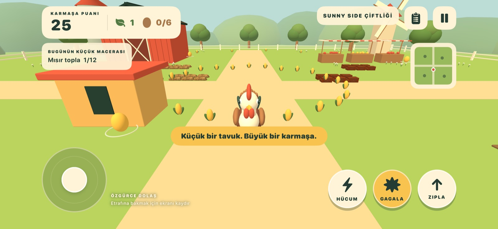
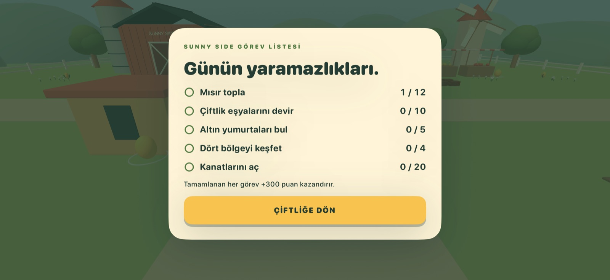
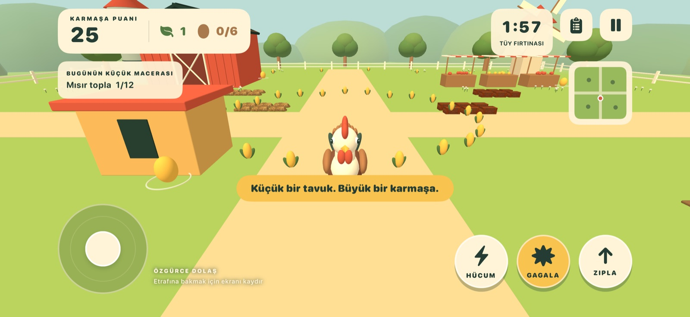

Senin çiftliğin, senin hızın.
Ahırı, pazarı, meyve bahçesini, göleti ve sebze bahçesini keşfet. 48 mısır ve altı altın yumurta topla.
Çevrimdışı tavuk simülatörü
Güneşli 3D çiftliği keşfet, altın yumurtaları bul ve ortalığı biraz karıştır. iPhone ve iPad için çevrimdışı tavuk simülatörü.
Yakında App Store’da · iOS 17+
Oyun desteği
Ahırı, pazarı, meyve bahçesini, göleti ve sebze bahçesini keşfet. 48 mısır ve altı altın yumurta topla.
Kolay dokunmatik kontrollerle eşyaları it, art arda vuruşlarla puan çarpanını yükselt ve beş çiftlik görevini tamamla.
Tüy Fırtınası modunda en iyi puanını geçmeye çalış. Serbest keşifteki ilerlemen ayrı tutulur.


Hesap, reklam ve analiz sistemi yok. İlerlemen ve ayarların cihazında tutulur.
Gizlilik politikasını oku →